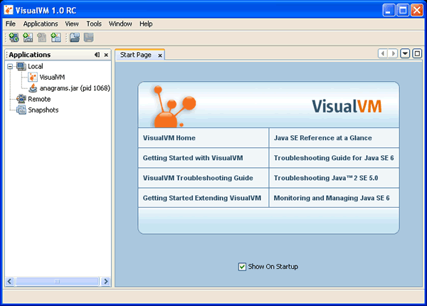

VisualVM 소개
VisualVM은 자바 기반의 애플리케이션이 자바 가상머신(JVM)에서 동작하는 과정에서 세부적인 정보를 보여주기 위한 시각화된 인터페이스를 제공하는 툴이다. VisualVM은 자바개발도구인 JDK에 의해 검색된 JVM소프트웨어의 데이터를 조합하고 여러개의 자바 애플리케이션 데이터를 빨리 보여줄수 있는 방법으로 정보들을 체계화한다. 로컬에서 실행중인 애플리케이션뿐 아니라 원격에서 실행중인 애플리케이션의 데이터 또한 볼수 있다. JVM 소프트웨어 인스턴스의 데이터를 추출하고 로컬 시스템에 그 데이터를 저장할 수 있다. 게다가 그 데이터를 나중에 다시 볼수도 있고 다른 사람에게 공유할 수도 있다.
자바 VisualVM의 모든 기능을 사용하기 위해서는 JDK6 이상에서 사용해야만 한다.
VisualVM 시작
VisualVM을 다운로드한 뒤에 로컬 시스템에 압축을 해제하자. bin 디렉터리로 이동해서 VisualVM의 실행가능한 파일을 더블클릭하거나 명령창에서 다음 명령어를 실행하자.
visualvm
VisualVM을 실행하고 가장 먼저 라이센스에 동의하자.
VisualVM 사용자 디렉터리(Userdir)
윈도우즈에서, VisualVM의 디폴트 위치는 아래 사용자 디렉터리:
C:\Documents and Settings\<USER>\Application Data\.visualvm\FCS
VisualVM의 사용자 디렉터리를 찾기 위해서는 메인 메뉴에서 Help > About 를 클릭하고 Detail버튼을 클릭하자.
VisualVM 창
VisualVM을 시작하면 VisualVM의 메인창이 뜬다. VisualVM의 메인창은 두개의 영역으로 나뉜다.
VisualVM을 처음 시작하면, Applications 창은 왼쪽창이 보이고 오른쪽창은 시작페이지를 보여준다.
시작페이지는 VisualVM문서 페이지의 링크와 몇가지 추가적인 자원에 대한 링크를 담고 있다.
알림: 시작페이지는 VisualVM을 시작할때마다 열린다.
메인 메뉴에서 Help > Start Page 를 클릭해서 시작페이지를 열수도 있다. "Show On Startup" 체크박스를 사용해서 시작페이지를 숨길수도 있다.
Applications 창
Applications창은 애플리케이션을 실행하면 VisualVM의 왼쪽창에 보여준다. Applications창은 실행중인 애플리케이션의 세부정보를 보기 위한 진입지점이다. Applications창은 로컬과 원격에서 실행중인 애플리케이션을 빨리 보기 위해 트리 구조를 사용한다. Applications창에서 코어 덤프(솔라리스/리눅스)나 저장된 스냅샷을 볼 수 있다.
Applications창에서 노드에 오른쪽 클릭을 하면 애플리케이션 탭을 열거나 힙 또는 쓰레드 덤프를 생성하고 메인창에 스냅샷을 여는 것과 같은 노드에 관련된 기능을 수행하기 위해 팝업이 뜬다.
데이터를 보거나 저장하기 위해 Applications창을 사용하는 방법에 대해 좀더 세부적으로 알고 싶다면, 다음 페이지들을 보면 된다.
메인창
메인창은 애플리케이션의 세부정보를 보여준다. 애플리케이션에 대한 데이터를 볼때, 각각의 애플리케이션은 데이터를 쉽게 보고 찾을수 있도록 메인창의 탭으로 표시된다. 저장된 쓰레드 덤프와 힙 덤프는 메인창에서 열어볼 수 있다.
메인창에 표시되는 애플리케이션 데이터의 세부적인 정보는 다음 페이지에서 하나씩 살펴볼 수 있다.
- 애플리케이션 Overview(개요) 탭
- Monitor탭에서 애플리케이션 모니터링
- Threads탭에서 쓰레드 모니터링
- 힙덤프 살펴보기
- Profiler탭에서 애플리케이션 프로파일링 (로컬 애플리케이션만 해당됨)
- MBeans 탭 (MBeans 플러그인이 필요함)
VisualVM 플러그인
VisualVM 플러그인 센터에서 플러그인을 설치하기 위해 플러그인 관리자(Plugins창)를 사용해서 기능을 추가할 수 있다. 업데이트(update) 센터에 추가할 수 있는 자신만의 플러그인을 개발해서 VisualVM의 기능을 확장할 수도 있다.
예를 들어, VisualVM의 MBean플러그인을 설치하면 애플리케이션 탭에 MBeans 탭을 추가하게 된다. MBean플러그인은 VisualVM에 MBean을 모니터링하고 관리하는 기능을 추가해준다.
VisualVM 플러그인 설치
- 메인메뉴에서 Tools > Plugins 를 선택한다.
- Available Plugins탭에서 설치할 플러그인을 선택한다. 그리고 Install 을 클릭한다.
- 일반적인 단계를 거쳐 플러그인 설치를 완료하자.
VisualVM플러그인을 만드는 세부적인 정보를 알기 위해서는 다음 문서를 참고하자.